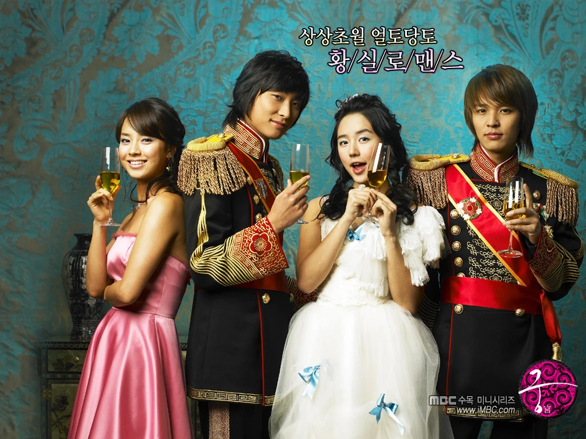
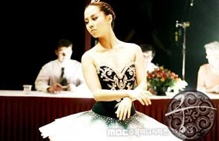
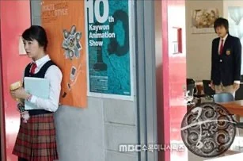
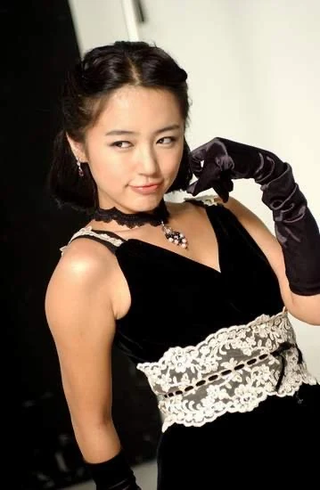
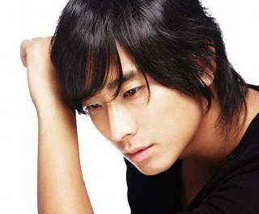

Ces avis sont des archives de juillet 2012, rédigées par Sandrine, alias Haudryane.
Mes critiques très inspirées
Commentaires du mois de Juillet 2012
Goong

Titre : Goong / Princess Hours Acteurs :
Genre : Romance, Comédie Yoon Eun Hye (Shin Chae Kyung)
Episodes : 24 Joo Ji Hoon (Lee Shin)
Date : 2006 Kim Jung Hoon (Lee Yul)
Taux d'audience : 22.6% Song Ji Hyo(Min Hyo Rin)
Résumé :
Cette histoire se passe dans une Corée hypothétique dans laquelle il y aurait encore une monarchie constitutionnelle comme en Angleterre. Notre h

éroïne, Shin Chae Kyung, une jeune fille énergique et enthousiaste issue d'une famille pauvre mais très unie, étudie l'art plastique dans une école d'Art. Dans cette école étudie également le prince de Corée, Shin. Celui-ci est amoureux de Hyo Rin, une jeune ballerine qui étudie la danse, et il va même jusqu'à lui proposer de l'épouser mais elle refuse sa demande car rêve de devenir danseuse étoile.
Chae Kyung assiste à sa demande alors qu'elle est cachée dans le couloir mais le prince la voit et la menace afin qu'elle ne révèle pas ce qu'elle a vu à la presse. Cela marque leur première rencontre mais ce qu'ils ignorent, c'est que le grand-père de Chae Kyung a sauvé à la guerre le grand-père de Shin. Pour le remercier, celui-ci promet en mariage son futur petit-fils héritier à sa future petite fille.Shin accepte cet arrangement car il ne veut pas condamner quelqu'un qu'il aime à cette fonction princière qu'il déteste. Chae Kyung, quant à elle, accepte afin de sauver sa famille très endettée. La voici donc princesse de Corée, soumise à un protocole stricte et mariée à un prince qui n'en a rien à faire d'elle. Heureusement, Chae Kyung ne manque pas de ressource !!
Notation : 6/6
Mon Avis de moi personnel :
AAAHHH Goong ! Un de mes tous premiers dramas coréens, une histoire magnifique, un coup de cœur monumentale ! Je l'ai vu au minimum quatre fois. Est-ce qu'il mérite une telle passion ? Sans aucun doute ! Il est loin d'être parfait mais il a fait vibrer mon cœur d'artichaut, chaque épisode a sa scène émouvante qui me fait papillonner l'estomac.
Mais parlons d'abord du casting !

Pour commencer, l'héroïne Yoon Eun Hye. C'est une actrice que j'aime beaucoup et que j'ai découvert dans ce drama et que j'ai tant apprécié que j'ai visionné tous les dramas qu'elle a tourné par la suite. Son personnage dans Goong est incontestablement un de mes personnages préférés. Pour commencer, elle est incroyablement belle, ce qui ne gâche rien... Ensuite, elle joue vraiment bien, elle est dynamique, espiègle sans que cela soit surjoué et gonflant. Quand elle est heureuse, on l'est, quand elle pleure, on pleure aussi. L'évolution de Chae Kyung et de sa relation avec Shin est belle, bien faite et naturelle. Elle est définitivement merveilleuse !

Quant à l'acteur principal Joo Ji Hoon, ah que dire de plus que Waouhhh! Et pourtant de prime abord, j'aurai dis qu'il était trop fin, pas assez virile à côté d'acteurs comme Oh Ji Ho ou Song Seung Hun mais en fait, il est incroyablement pertinent dans son rôle. Il sait être froid, distant, glacialement beau et indifférent, et surtout, il illumine l'écran dès qu'il sourit !

Commentaires du mois d'Août 2012
Commentaires du mois de Septembre 2012
Commentaires du mois d'Octobre 2012